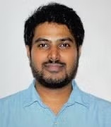
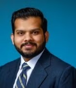
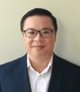

UIC Department of Chemical Engineering - ABET 2026
Educational Assessment and Continuous Improvement System
Educational Assessment and Continuous Improvement System
Overview
1. Students
2. Program Educational Objectives
3. Student Outcomes
4. Continuous Improvement
5. Curriculum
6. Faculty
7. Facilities
8. Institutional Support
Faculty Vitae
- Ezinne C. Achinivu-Ibagere (PDF)
- Said Al-Hallaj (PDF)
- Vikas Berry (PDF)
- Betul Bilgin (PDF)
- Michael Caracotsios (PDF)
- Brian Chaplin (PDF)
- Naveen Dandu (PDF)
- Sangil Kim (PDF)
- Ying Liu (PDF)
- Shafieq Mehraeen (PDF)
- Roshan Nemade (PDF)
- Anh Ngo (PDF)
- Vivek Sharma (PDF)
- Meenesh Singh (PDF)
- Christos Takoudis (PDF)
- Korosh Torabi (PDF)
- Lewis Wedgewood (PDF)
- Alan Zdunek (PDF)
Faculty Awards
-
National Science Foundation CAREER/NYI Awardees
- Brian Chaplin 2015
- Gang Cheng 2015
- Ying Liu 2014
- Vikas Berry 2011
- Michael Amiridis 1996
-
Faculty Teaching, Student Advising, and Other Awards
-
Michael Amiridis
- AAAS Fellow, Catalyst Today Top Cited Article Award (2004), University of South Carolina’s research achievement award (2005), USC Golden Key Award for Integration of Undergraduate Teaching and Research (2000)
-
Vikas Berry
- Sigma Xi Junior Scientist Award, Big XII Fellowship, Stroebel Scholarship
-
Betul Bilgin
- AIChE 35-under-35 Winner in Education Category (2017), ASEE "20 Under 40" awardee (2018), Teaching Scholar; UIC Teaching Scholar Program (2017)
-
Brian Chaplin
- Environmental Water Resources Institute’s 2011 Samuel Arnold Greeley Award (Best Paper)
-
Sangil Kim
- Physical and Life Sciences Directorate Award – LLNL, 2010 R&D 100 Editors Choice Award, Graduate Research & Develop Program Award (2005), Pratt Fellowship (2004)
-
Ying Liu
- Office of the Vice Chancellor, UIC Researcher and Scholar of the Year, Rising Star Award (2015), COE Research Award, Howard Crathorne Phillips Graduate Fellowship, Rong Hong National Fellowship
-
Shafigh Mehraeen
- NextProf Grantee, MIT Ascher Shapiro Award, Harry M. Showman Prize –UCLA, MIT-SUTD Postdoctoral Fellowship
-
Vivek Sharma
- Distinguished Young Rheologist Award, TA Instruments (2015)
-
Meenesh Singh
- AIChE Process Development Division Student Paper Award, George Klinzing Best PhD Award, AIChE Separation Division Graduate Student Research Award, ACS I&EC Division Graduate Student Award- Finalist, Faculty Lectureship Award
-
Lewis Wedgewood
- COE Harold Simon Award for Excellence in Teaching (2003-2004), UIC Award for Excellence in Teaching (2013-2014), COE Faculty Teaching Award (2009, 2007), Teaching Recognition Program Award (2000-2001, 2007, 2008), COE Advising Award (2007, 2008)
-
Alan Zdunek
- COE Faculty Teaching Award (2016, 2017, 2018)
Chemical Engineering Faculty

|
Vikas Berry
Professor and Department Head PhD, Virginia Polytechnic Institute & State University, 2006 226A EIB Phone: (312) 996-2342 Email: vikasb@uic.edu Biographical sketch Dr. Vikas Berry is the Satish C. & Asha Saxena Professor and Head of Chemical Engineering at the University of Illinois Chicago, where he has been on the faculty since 2014. He received his Ph.D. in Chemical Engineering from Virginia Tech in 2006, following his M.S. from the University of Kansas in 2003 and B.Tech. from the Indian Institute of Technology Delhi in 1999. Dr. Berry is internationally recognized for pioneering contributions to graphene-based quantum materials and bio/nano technologies, including the development of four distinct methods for graphene synthesis and production. His work on graphene bio interfaces has served as a key foundation for biological applications of graphene. He is a recipient of the NSF CAREER Award, the Sigma Xi Outstanding Junior Scientist Award, and the Big 12 Fellowship, and previously held the William H. Honstead Professorship at Kansas State University. His research has been published in leading journals including Nature Photonics, Nature Communications, Nano Letters, Advanced Materials, and Small, and has been featured in major outlets such as The Economist, The Wall Street Journal, and Science News. Dr. Berry serves on the editorial boards of Scientific Reports and the Journal of Nanoscience Letters, and his research is supported by the NSF, DoD, and industry. Research interests: 2D Nanomaterials (Graphene,Metal Dichalcogenides, BN), Bio-Nanotechnology, Materials Science, Electronic Materials, Molecular Devices, Sensors |
|
Ezinne C. Achinivu-Ibagere
Assistant Professor PhD, North Carolina State University, 2014 174 EIB Phone: (312) 413-3424 Email: achinivu@uic.edu Biographical sketch Dr. Ezinne Achinivu-Ibagere is an active member of the American Institute of Chemical Engineers (AIChE) and the American Chemical Society (ACS) and regularly attends conferences in bioprocessing and green chemistry. She has served on proposal review panels for the National Science Foundation (NSF) and the Department of Energy (DOE) and is an active reviewer for several professional journals, including Green Chemistry, Industrial & Engineering Chemistry Research, and ACS Sustainable Chemistry & Engineering. Dr. Achinivu-Ibagere's research focuses on the sustainable conversion of lignocellulosic biomass into renewable fuels, bioplastics, and value-added chemicals using ionic liquid–based pretreatment and bioprocess engineering, with recent publications featuring graduate and undergraduate student co-authors as lead contributors. She is a co-founder of ChemE Connect, a departmental initiative dedicated to strengthening sense of belonging among students, faculty, and staff within the UIC Chemical Engineering community, and she actively mentors students in her laboratory in experimental design, biomass characterization, and sustainable process development. Dr. Achinivu-Ibagere currently serves on the CHE Graduate Committee and the CHE Advisory Committee and is a member of the newly founded UIC Catalyst Center (UIC CAT), which advances interdisciplinary research across campus. She also serves on the Advisory Board of the U.S. DOE Bioenergy Technologies Office (BETO) Agile BioFoundry, where she contributes to shaping national priorities in biomanufacturing and engages directly with industry partners and professional practitioners to connect fundamental research to scalable applications in the bioeconomy. Research interests: Sustainable Energy Development, Green Chemistry and White Biotechnology, Transformation of Waste into Bioproducts, Biorefining of Waste Biomass, Molecular Design for Performance-Advantaged Biopolymers |
|

|
Said Al-Hallaj
Visiting Research Professor PhD, Illinois Institute of Technology, 1999 Chairman/CEO of All Cell Technology LLC, Chicago, IL 270 EIB Phone: (312) 996-8734 Email: sah@uic.edu Biographical sketch Dr. Said Al-Hallaj is the Founder and CEO of NETenergy, Chief Battery Scientist at Beam Global company (Nasdaq: BEEM, BEEMW), Co-founder and former CEO of AllCell Technologies LLC (acquired by Beam Global), and a Research Professor of Chemical Engineering at the University of Illinois at Chicago (UIC). Dr. Al-Hallaj earned his bachelor’s and master’s degrees in chemical engineering from the Jordan University of Science and Technology (JUST) and a Ph.D. in chemical engineering from the Illinois Institute of Technology (IIT). Said co-authored a book entitled “Hybrid Hydrogen Systems” and has published several book chapters and numerous numbers of peer reviewed and conference journal papers with >16,000 literature citations. Said is a serial entrepreneur, and his R&D effort has led to the successful commercialization of several clean-tech technologies. Research interests: Design Optimization and Safety of Li-ion Batteries, Solar Desalination, Hydrogen Storage and Production, Renewable Energy Systems |

|
Betul Bilgin
Clinical Professor PhD, Michigan State University 144 EIB Phone: (312) 413-3940 Email: bbilgin@uic.edu Biographical sketch Dr. Betul Bilgin is a Clinical Professor in the Department of Chemical Engineering at the University of Illinois Chicago (UIC), where she has been a faculty member since 2014. She teaches Senior Design I and II, Introduction to Thermodynamics, Computational Methods, and Transport Phenomena III, and has led the development of these courses using active, project-based, and industry-integrated approaches. She has strengthened the Senior Design program by incorporating structured design processes and emphasizing safety, ethics, economic analysis, and environmental and societal considerations, while expanding industry mentorship and engagement. Her research focuses on engineering education, including engineering judgment, identity development, data science integration, and AI-supported learning. Dr. Bilgin is actively involved in student mentoring, advising the AIChE Student Chapter, and leading outreach, diversity, and curriculum initiatives. She also serves nationally as Director of the ASEE Chemical Engineering Division and 2nd Vice Chair of the AIChE Education Division. Her contributions to engineering education have been recognized with multiple awards, including the ASEE Ray Fahien Award (2024), UIC College of Engineering Harold Simon Award (2022), UIC Teaching Recognition Program Award (2021), and AIChE “35 Under 35” and ASEE “20 Under 40.” Research interests: Engineering Education |

|
Michael Caracotsios
Clinical Associate Professor PhD, University of Wisconsin, Madison President/Founder, AthenaVisual, Inc., Naperville, IL 244 EIB Phone: (312) 413-3777 Email: mcaracot@uic.edu Biographical sketch Dr. Michael Caracotsios is a Clinical Associate Professor in the Department of Chemical Engineering, following a distinguished 30-year career with UOP/Honeywell prior to his retirement in 2015. He teaches and develops course materials and computational tools for Chemical Engineering Thermodynamics (CHE 301), Process Simulation and Design with ASPEN Plus (CHE 433), and Chemical Process Control (CHE 341). He is also the President and Founder of AthenaVisual, Inc., which promotes the use of AthenaVisual Plus, a state-of-the-art engineering software platform for mathematical modeling, parameter estimation, model discrimination and validation, and sequential optimal experimental design. Dr. Caracotsios has supervised numerous undergraduate research projects that have led to the development of advanced computational tools in Thermodynamics, Fluid Mechanics, Heat Transfer, Chemical Equilibrium, Process Control, and Reactor Design. These tools are fully integrated into his teaching, enabling students to analyze and solve complex, real-world problems drawn from his extensive industrial experience. He received his Ph.D. in Chemical Engineering from the University of Wisconsin–Madison. Dr. Caracotsios is the author of two patents, twelve peer-reviewed publications, and numerous presentations at national and international conferences. He is also co-author of the book Computer-Aided Design of Chemically Reactive Systems, published by John Wiley & Sons (2006). A strong advocate for accessible education, Dr. Caracotsios actively develops and distributes open instructional materials. He has authored comprehensive lecture notes and computational resources for courses in Thermodynamics, Process Simulation, and Process Control. He recently completed the first edition of a thermodynamics textbook, supported by a $2,500 award from the University Library, with final publication planned for Fall 2026. Dr. Caracotsios regularly invites industry experts to deliver seminars on topics including process design, control, safety, and leadership. He is also engaged in outreach efforts, visiting local high schools to promote chemical engineering and highlight its impact on society. In addition, he organizes student visits to industrial facilities, providing direct exposure to professional practice. These experiences have included visits to Novaspect (an Emerson Impact Partner in Process Automation), the Dresden and LaSalle nuclear power plants in Illinois, and EATS 2025 at McCormick Place in Chicago—a major food and beverage technology exposition that provides access to leading equipment and technology suppliers, networking opportunities, and interactive industry demonstrations. He is actively involved in undergraduate student activities within the department. Dr. Caracotsios is also an active member of the American Institute of Chemical Engineers (AIChE). Research interests: Multiphase Chemical Reactor Modeling, Catalyst Deactivation and Life Prediction, Bayesian Inference in Statistical Analysis, Nonlinear Parameter Estimation in Chemical and Biological Systems, Model Discrimination and Optimal Experimental Design. |

|
Brian P. Chaplin
Professor and Director of Graduate Studies PhD, University of Illinois at Urbana-Champaign, 2007 221 CEB Phone: (312) 996-0288 Email: chaplin@uic.edu Biographical sketch Dr. Brian Chaplin is an active member of the American Chemical Society and organizes research symposia annually. Dr. Chaplin has served on proposal review panels for the National Science Foundation and Environmental Protection Agency. He is a frequent reviewer of several professional journals and Associate Editor for ACS ES&T Engineering. Dr. Chaplin has several externally funding research grants focused on water treatment and is recognized as a leader in the field of electrochemical water treatment. He has utilized this expertise to form meaningful collaborations with other academic researchers, consultants, municipalities, and industrial end users. For example, he is a research thrust leader for the Great Lakes ReNEW NSF Innovation Engine, which is a center focused on research and commercialization of water treatment technologies within the Great Lakes region. Research interests: Environmental Chemistry, Water Treatment. |
|
 |
Naveen Dandu
Research Assistant Professor PhD, North Dakota State University, 2016 Email: ndandu@uic.edu Biographical sketch Dr. Naveen Dandu is a Research Assistant Professor at the University of Illinois Chicago. His research lies at the intersection of computational chemistry, materials science, and artificial intelligence, with a focus on developing physics-informed, data-driven approaches for energy materials, nanostructures, and electrochemical systems. His work integrates density functional theory (DFT), ab initio molecular dynamics, and machine learning to accelerate the discovery and design of next-generation materials for applications such as batteries, catalysis, and nanoscale devices. Dr. Dandu is an active member of the American Chemical Society and contributes extensively to the scientific community as a reviewer for leading journals including Journal of the American Chemical Society, Angewandte Chemie, Journal of Chemical Information and Modeling, Energy & Environmental Science: Batteries, and iScience. He engages in interdisciplinary collaborations across academia, national laboratories, and industry. His research has been closely aligned with U.S. Department of Energy initiatives, including collaborations with Argonne National Laboratory (since 2019) and the Joint Center for Energy Storage Research (from 2019 to 2021), where he has contributed to data-driven electrolyte discovery and advanced materials modeling. His group develops scalable computational frameworks that bridge quantum, atomistic, and continuum scales, enabling predictive modeling alongside experimental validation. In addition to his research, Dr. Dandu is actively involved in teaching and mentoring undergraduate and graduate students. He is committed to interdisciplinary education and to advancing the role of artificial intelligence in scientific discovery. Research interests: Computational Materials Science, Quantum Chemistry, Machine Learning for Molecular and Materials Modeling |

|
Sangil Kim
Associate Professor PhD, Virginia Polytechnic Institute and State University (Virginia Tech.), USA (2007) 248 EIB Phone: (312) 355-5149 Email: sikim@uic.edu Biographical sketch Dr. Sangil Kim is an active member of the Electrochemical Society. He has served as a panelist for the National Science Foundation (NSF) and Department of Energy (DOE) for review of proposals. He is an Editorial Board member of Membranes and a Review Editor for Frontiers in Membrane Science and Technology journals and actively reviews for several journals such as the Advanced Materials, ACS Energy Letters, and Industrial & Engineering Chemistry Research. Dr. Kim’s research has focused on developing new membrane materials, understanding functioning mechanisms of the nanostructured device, and applying for biomedical engineering, energy efficient water purification and gas separation, and energy storage. He has led as a PI or co-PI multidisciplinary research projects sponsored by DTRA, DOE, ARPA-E, and NSF. He currently serves as a member of the CHE Safety Committee. Research interests: Mass transport in nanofluidics, Nano- and micro-engineered membrane technologies for gas separation, water purification, biomolecules separation, protective fabrics, and energy production/conversion. |

|
Ying Liu
Professor and College of Engineering Interim Associate Dean of Research PhD, Princeton University, 2007 152 EIB Phone: (312) 996-8249 Email: liuying@uic.edu Biographical sketch Dr. Ying Liu holds the Dr. Satish C. & Asha Saxena Professorship in the Department of Chemical Engineering. She is also affiliated with the Departments of Pharmaceutical Sciences and Biomedical Engineering at UIC. She currently serves on the advisory board of NSF’s ChemMatCARS and on the steering committee of AAAS Pharmaceutical Sciences subcommittee. Previously, she served as the Interim Associate Dean of Research in College of Engineering and Director of Graduate Studies in the Department of Chemical Engineering. Ying Liu has garnered several prestigious awards throughout her career, including National Science Foundation CAREER Award (2014), UIC Researcher and Scholar of the Year Rising Star Award (2016), and UIC Graduate Mentor Award (2017). Ying Liu’s research focuses on soft-matter physics and the knowledge-based design of delivery platforms for therapeutic drugs and cells. The Liu research group is currently advancing AI-guided design and optimization of nano formulations for drug and gene delivery. Research interests: Nanoparticle synthesis, Cell encapsulation, Soft-matter self-assembly kinetics, Microfluidics |

|
Shafigh Mehraeen
Associate Professor PhD, Stanford University, 2011 242 EIB Phone: (312) 996-8734 Email: tranzabi@uic.edu Biographical sketch Dr. Shafigh Mehraeen is a Principal Investigator and an associate professor at the UIC, where he leads research funded by the NSF, DoD, and NIH. His work utilizes computational modeling to advance water remediation technologies and develop cell-free drug delivery systems for retinal repair. An active contributor to the scientific community, Dr. Mehraeen serves as a panelist for the NSF CBET division and is a frequent reviewer for high-impact journals such as Physical Review Letters, ACS ES&T, and Langmuir. He holds active memberships in ACS, AIChE, and ASME, and currently serves on the UIC Chemical Engineering Graduate Admissions Committee. Committed to workforce development, he also leads initiatives providing research experiences for high school educators. Research interests: Molecular simulations, Charge transport in light harvesting systems, Directed and templated self-assembly, Complex fluids, Computational chemistry and materials science. |
|
 |
Roshan Y. Nemade
Visiting Research Assistant Professor PhD, University of Illinois Chicago, 2023 Email: rnemad2@uic.edu Biographical sketch Dr. Roshan Nemade is a Research Assistant Professor in Chemical Engineering at the University of Illinois Chicago, where he is actively engaged in teaching, mentoring, and research. His university service includes serving as a judge for 3MT thesis and poster presentations at the graduate symposium, reviewing for Chemical Engineering Research and Design, and contributing to laboratory training, safety practices, and student research activities. He regularly mentors undergraduate and graduate students through semester and summer research programs, supporting their development in experimental techniques, data analysis, and scientific communication. Dr. Nemade maintains continuous professional development through participation in technical conferences, NSF I-Corps commercialization training, and advanced instrumentation certification at the UIC Nanotechnology Core Facility. His work involves strong collaboration with industry and professional practitioners, including partnerships with Lawrence Berkeley National Laboratory, Spraying Systems Co., and industrial collaborators in advanced materials manufacturing. Through these efforts, he integrates academic research with real-world engineering applications and technology commercialization. Research interests: Graphene Manufacturing and Scale-Up, Graphene-Based Sensors and Bioelectronics, Energy Storage Materials, Thermal Management Materials |
|
 |
Anh Ngo
Professor PhD, Ohio University, 2010 230 EIB Phone: (312) 996-0689 Email: anhngo@uic.edu Biographical sketch Dr. Anh Ngo is a professor at University of Illinois at Chicago, Chemical Engineering department. He works on a wide range of topics including quantum materials with strong electronic correlations, renewable energy materials, catalysis and nanoscale devices. Anh Ngo’s research is also focused on computational models for materials, then combining those materials with experimental characterization to help design new materials and devices. Specifically, his expertise lies in predictive modeling of materials at multiple length and time scales ranging from quantum to meso-scale. State-of-the-art computational approaches he uses include ab initio electronic structure methods, quantum chemical calculations, density functional theory, quantum Monte Carlo methods, molecular dynamics, coarse-graining methods, battery cell level modeling, advanced sampling techniques, and development of materials models using Artificial Intelligence/machine learning methods. Dr. Anh Ngo has received multidisciplinary research funding from the DOE, DOD, and NSF. He has served on proposal review panels for the DOE Office of Critical Minerals and Energy Innovation, Manufacturing and Energy Supply Chains, and the Office of Energy Efficiency and Renewable Energy (EERE), including the Bipartisan Infrastructure Law (BIL) Battery Materials Processing and Battery Manufacturing programs. He is a member of the U.S. Battery500 Consortium and the Low-cost Earth-abundant Na-ion Storage (LENS) Consortium. He has also served as a member of the CHE Graduate Committee. Research interests: Strongly Correlated Quantum Materials, Quantum-to-Device Modeling, Artificial Intelligence-Driven Computational Materials Science, Renewable Energy and Nanotechnology, Advanced Battery Materials, Physics-Informed Artificial Intelligence |

|
Vivek Sharma
Professor PhD, Georgia Institute of Technology, 2008 252 EIB Phone: (312) 996-5711 Email: viveks@uic.edu Biographical sketch Dr. Vivek Sharma is an active member of the Society of Rheology (SOR), the American Institute of Chemical Engineers (AIChE), the American Physical Society (APS), the Adhesion Society, the Society for Engineering Sciences (SES), and the American Chemical Society (ACS). He organizes and chairs sessions at several national meetings: regularly at SOR Meetings, ACS Colloids, AIChE (2013-2026), and APS (2014-2026), and occasionally at ACS, Adhesion Society, and the U. S. National Congress on Theoretical and Applied Mechanics. Dr. Vivek Sharma regularly attends meetings of these professional societies, presents papers and posters at their conferences, and has organized short courses for SoR and APS DPOLY. He was elected as a member-at-large for APS DPOLY (2023-2026), AIChE Area 1J: Fluid Mechanics programming committee, and serves on the ACS Colloids conference organizing committee, the SoR centennial committee and the AIChE awards committee, and in the past has served as social media chair for SoR, APS DPOLY, and APS DSOFT. In addition, Dr. Sharma has presented at Gordon Research Conferences (GRCs) on Adhesion, Polymer Physics, and Colloidal, Macromolecular and Polyelectrolyte Solutions (CMPS), served as a discussion leader in Polymer Physics & CMPS, plus participated in several GRC meetings. He was recently elected vice-chair for CMPS GRC; he will organize it in 2030. Dr. Sharma also co-organized the Telluride Workshop in Molecular Engineering in Soft Matter in 2023 and 2025 and served as an invited instructor for the Food and Soft Matter Workshop held in Cargese, Corsica, FR, in 2024 and 2026. Dr. Sharma has served on several panels for the National Science Foundation (NSF) and actively reviews papers for over a dozen scientific journals. He was the Guest editor for a special issue on Food as Soft Matter. Dr. Sharma has given over hundred invited talks at conferences, in industry and in universities, won the 3M Nontenured Faculty Award (2019), TA Distinguished Young Rheologist Award (2017) UIC’s COE Teaching Award in 2017, 2023 and 2026, and UIC COEs Mentoring Award in 2022. Dr. Sharma’s students have won over a dozen prizes and recognitions at the GRC meetings, APS March Meeting (including Padden Award), AIChE and ACS Colloids meetings. Dr. Sharma has held visiting professor appointments at the University of Chicago, Stanford University, and ESPCI Paris. Research interests: Rheology & Processability, DoS rheometry, Polymer Physics, Fizzics (Bubbles, drops, jets, emulsions & foams), Biophysics & Protein Science, Structural Color, Adhesion & Wetting, Food Science, Molecular Engineering. |

|
Meenesh Singh
Professor PhD, Purdue University, 2013. 256 EIB Phone: (312) 413-7673 Email: mrsingh@uic.edu Biographical sketch Dr. Meenesh R. Singh is a Professor of Chemical Engineering at the University of Illinois Chicago (UIC), where he directs the Materials and Systems Engineering Lab (MaSEL) and the UIC Catalyst (CAT) Center. His research develops advanced computational and experimental tools to address critical challenges, including carbon sequestration, nitrogen cycle management, clean water access, and advanced therapeutics. Dr. Singh earned his B.E. from Sardar Patel University (2005), MTech. from IIT Bombay (2008), and Ph.D. from Purdue University (2013), and was a Postdoctoral Fellow at the Joint Center for Artificial Photosynthesis (UC Berkeley/LBNL). His work has resulted in 100+ publications, 8 patents (2 licensed), 3 book chapters, 5 open-source tools, 130 conference presentations, and 35 invited talks, supported by ~$9.2M in external funding and collaborations with multinational companies. He has mentored Ph.D. graduates now at Massachusetts Institute of Technology, Lawrence Livermore National Laboratory, and AbbVie, and currently advises Ph.D. students, postdocs, and undergraduates. He serves on editorial boards of multiple journals, including Chemical Engineering Research & Design, Sustainable Chemistry, Challenges, Sustainability, and Current Trends in Chemical Engineering and Process Technology, and is a reviewer for 15+ journals. Dr. Singh has chaired AIChE sessions in separation and reaction engineering and advises the UIC AIChE Chem-E-Car team (nationally placed, 2019). His honors include the AIChE George Klinzing Award and multiple best paper awards. His work has been featured in major outlets including CNN, IEEE Spectrum, and Quanta Magazine. He is also CTO of eN-RAMPS. Research interests: Artificial Photosynthesis, Pharmaceutical Engineering, Carbon Capture and Sequestration, Environmental Engineering, Computational Materials, |

|
Christos G. Takoudis
Professor PhD, University of Minnesota, 1982 207 SEO Phone: (312) 355-0859 Email: takoudis@uic.edu Biographical sketch Dr. Christos Takoudis (25%, Home Department: Bioengineering) is an active participant in meetings of the American Institute of Chemical Engineers, the American Chemical Society, the American Vacuum Society, and the Materials Research Society. He maintains active research collaborations with industrial partners (e.g., Kurt J. Lesker) in addition to federally funded projects. Portions of his recent research have been highlighted on social media and in professional outlets by the American Institute of Physics and the American Vacuum Society. He is also engaged in consulting activities, serves as a panelist for funding agencies, and regularly reviews manuscripts for professional journals. Research interests: Micro- and nano-electronic materials and processing. Heterogeneous catalysis and surface chemistry. Cerebral Malaria. Long-term inhibition of bacterial-associated infections in implant devices |
|
Korosh Torabi
Clinical Assistant Professor PhD, Purdue University, 2011 246 EIB Phone: (312) 996-0689 Email: korosh@uic.edu Biographical sketch Dr. Korosh Torabi is actively engaged in student mentorship and development as a co-adviser for the AIChE student chapter, where he co-leads the ChemE Car and ChemE Cube teams, and he founded the ChemE-Connect committee to foster a strong sense of community and belonging within the chemical engineering department at the University of Illinois Chicago. His university service includes serving on the ChE department undergraduate curriculum committee and judging the ChE graduate research symposium at UIC, both of which support academic quality and student scholarship. At the professional level, Dr. Torabi has served on the Education Committee of the Biophysical Society and has organized and chaired multiple sessions at the AIChE Annual Meeting, advancing professional development and engagement within the discipline. He also maintains active connections with industry and professional practitioners through his role on the advisory board of the Engineering Technology program at Henry Ford College, contributing to curriculum alignment with workforce needs and strengthening collaboration between academia and industry. Research interests: Computational and Theoretical Chemical Engineering, Protein Folding and Molecular Modeling, Thermodynamics and Transport Phenomena |
|
|
Lewis E. Wedgewood
Associate Professor PhD, University of Wisconsin, 1988 250 EIB Phone: (312) 996-5228 Email: wedge@uic.edu Biographical sketch Dr. Lewis E. Wedgewood is an active member of the American Institute of Chemical Engineers (AIChE) and the Society of Rheology (SOR) and has participated in the Midwest AIChE conferences. He is currently a member of the department’s Advisory Committee which reviews department academic policy and financial expenditures. He is also on the department Undergraduate Committee which modifies the curriculum and develops new courses. He has been a panelist for the National Science Foundation for review of proposals and is an active reviewer for journals such as the Physics of Fluids. Research interests: Computational fluid mechanics, Macromolecular fluid flow, Transport Phenomena, and Stochastic Simulations |
|

|
Alan D. Zdunek
Clinical Associate Professor and Director of Undergraduate Studies PhD, Illinois Institute of Technology, 1990 150 EIB Phone: (312) 996-4607 Email: zdunek@uic.edu Biographical sketch Dr. Alan D. Zdunek is a Clinical Associate Professor and the Director of Undergraduate Studies (DUGS) in the Chemical Engineering department. He served as the Director of the Engineering Success Program (ESP) in the College of Engineering from 2018-2026 and has been an active member of the COE Education Policy Committee since 2015. He was also the faculty advisor for the UIC AICHE student chapter from 2015-202. As DUGS, Dr. Zdunek is involved in all aspects of the undergraduate program, from curriculum development, student extracurricular activities, professional development, chemical engineering alumni relations, external advisory board relations, and high school/community college recruitment. He was a co-PI on two research projects; an NSF grant developing advanced materials for solid-oxide fuel cells, and a UIC Proof of-Concept grant studying the feasibility of a water desalination technology. Recently he has been a co-PI on an NSF IUSE proposal to promote engineering identity development through mentoring networks. He has also supervised several undergraduate research projects. Community service activities include giving “What is Chemical Engineering” presentations at local high schools and community colleges and recruitment events on campus. Utilizing his 17 years of industrial experience, Dr. Zdunek consults in the areas of corrosion engineering and electrochemical technology. He is an active member of the American Institute of Chemical Engineers (AIChE), American Chemical Society (ACS) and has served as the Chairman of the ECS Chicago section. Research interests: Electrochemical engineering, electrochemistry, corrosion engineering, engineering education. |